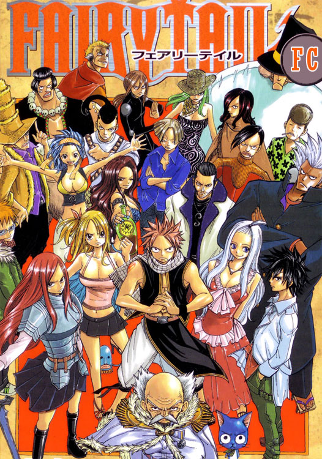

Английское название: Fairy Tail
Русское название: Хвост Феи
Число серий: TV - ?/100 эп.
Жанр:Комедия,Фэнтeзи,Приключения
Студия: Satelight, A-1 Pictures Inc.
Оценка:9/10
Год выпуска: 2009

Описание аниме: Люси – 17-летняя девушка, которая хочет быть вполне оперившимся волшебником. Однажды, посещая Город Харуджион, она встречает Натсу, парня, который заболел из-за транспортировки. Но Натсу не только обычный пацан, он – один из членов мировой известной гильдии волшебников – Волшебный Хвост.
Персонажи Fairy Tail))
Назад